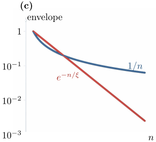

Advanced Quantum Materials 2027 · All lectures · Lecture notes
Session 9. Excitations and Defects in Quantum Materials
9.11 Closing summary

A perturbation that is applied to a quantum material and measured at another place defines a response function. With translational symmetry and time-translation symmetry, it is most natural to write it in \((q,\omega)\)-space (Section 9.1).
A classical first example already contains the logic of the whole session. The sign of the divergence in the magnetic susceptibility at high temperature (9.1) predicts, from the disordered phase alone, whether the order at low temperature will be ferromagnetic or antiferromagnetic.
Linear response theory (9.2)-(9.3) computes the leading effect of any perturbation only from the unperturbed ground state. It fails for the orthogonality catastrophe, the Kondo effect and the BCS gap, since none of them are connected to the unperturbed state in a perturbative way.
For a Fermi sea, the static and dynamical Lindhard functions (9.4)-(9.5) are built only from matrix elements between occupied and empty states close to the Fermi surface. They diverge when a nesting vector connects large parts of that surface, which signals an instability (Section 9.4).
If we sum the interaction to all orders with the random phase approximation (9.6), we find two different sources of divergence. These are electron-hole excitations from \(\chi_0\) itself, and collective plasmon excitations (9.7) from the RPA denominator.
The Stoner criterion (9.8), \(U\chi_0(q,0)=1\), gives again the magnetism of session 1 and session 6 as an instability of the paramagnetic response function, including the preference for antiferromagnetism at a nested (half-filled) Fermi surface, and not as an ordered mean-field ansatz imposed by hand.
A local impurity in a metal gives Friedel oscillations (9.9). These are a density modulation with period set by \(2k_F\) and a power-law decay, and they give a direct image of the Fermi surface, which is the same physics that an STM measures with quasiparticle interference.
A magnetic impurity in a superconductor creates a Yu-Shiba-Rusinov in-gap bound state (9.10). Its energy crosses zero at a real quantum phase transition, where the fermion parity of the electrons changes and their spin goes as \(S_{\rm tot}=0 \to 1/2\), while a non-magnetic impurity leaves the spectrum almost unchanged.
A vacancy in a topological superconductor or in a Chern insulator gives an in-gap mode only because of the bulk-boundary correspondence. This is a diagnostic for topology that a clean and fully gapped bulk spectrum alone cannot give (Section 9.8).
The screening of a magnetic impurity in a quantum spin liquid uses directly the Abrikosov-fermion mean-field construction of session 8, and it has the same mathematics as the impurity in a metal of Section 9.6. The induced spin correlation (9.11) decays as a power law for the gapless spin-1/2 chain and exponentially for the gapped spin-1 chain. This gives a fully general diagnostic of gapped and gapless states from the impurity response alone.
Many impurities at the same time can break translational symmetry in the whole system, which gives rise to Anderson localization. In \(d\geq3\) there is a real mobility edge, which we diagnose with the inverse participation ratio (9.12), and an Anderson insulator, which has no spectral gap but has a transport gap. In one dimension an arbitrarily weak disorder localizes every state, and the localization length diverges as the disorder strength goes to zero (Section 9.10).
Every session so far has gone in the same direction. We start from a Hamiltonian, and we compute what it predicts, which can be an observable, a response function or a ground state. Session 10 goes in the opposite direction. In this whole course we computed observables from Hamiltonians, and in the next session we ask the inverse question. Given only the observed data, can we find the Hamiltonian that produced it? We will see that machine learning is the right tool to make this question precise.
We put a single vacancy in a clean material, and we see a density oscillation that decays as \(1/|x|\) in one dimension. What do we conclude about the ground state?
Show the answer
The correct option is B.
A power-law envelope means that the response has a non-analytic point, and in a metal this is \(2k_F\). A gapped state would give an exponential envelope, with the gap setting the decay length.